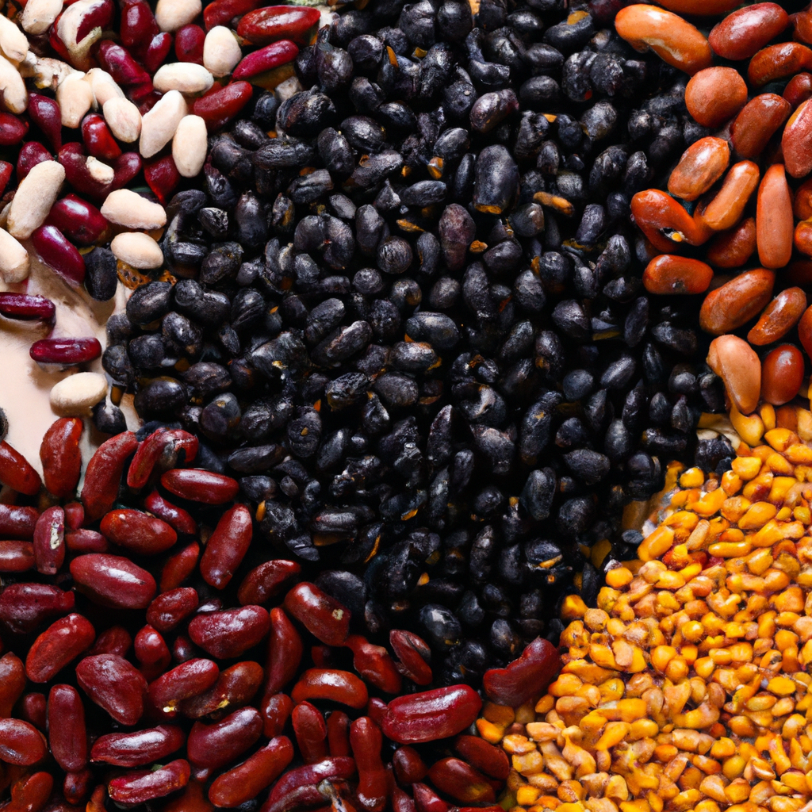
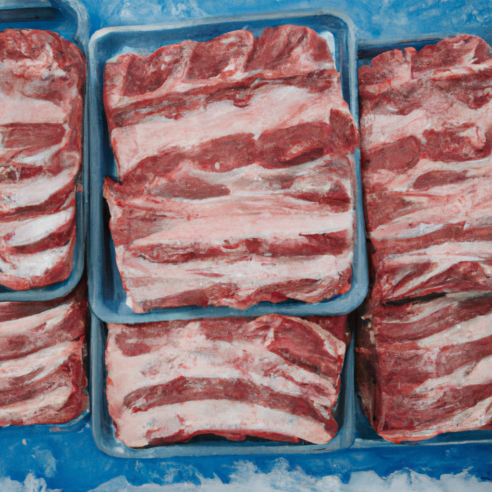

Vector Trade Capital supplies bulk food commodities to importers, distributors, and institutional buyers across the Caribbean. We source from established origins in the Americas and Asia, delivering full container loads at competitive CIF pricing with complete trade documentation.
Vector Trade Capital suministra productos alimenticios al por mayor a importadores, distribuidores y compradores institucionales en todo el Caribe. Abastecemos desde orígenes establecidos en las Américas y Asia, entregando contenedores completos a precios CIF competitivos con documentación comercial completa.
What We Supply
Lo Que Suministramos

Rice
Long grain white rice, parboiled rice, and specialty varieties. Sourced from established milling operations in the Americas and Southeast Asia.
Grades5% · 15% · 25% broken
Packaging25kg · 50kg bags · bulk
OriginsGuyana · USA · Thailand · India

Sugar
Raw and refined cane sugar for industrial and consumer markets. Consistent quality from top-tier refineries and mills.
TypesICUMSA 45 · Raw VHP · Brown
Packaging50kg bags · bulk · 1MT totes
OriginsBrazil · Guatemala · Colombia

Wheat Flour
All-purpose and bread flour for commercial bakeries, food manufacturers, and wholesale distribution throughout the Caribbean.
TypesAll-purpose · Bread · Pastry
Packaging25kg · 50kg bags
OriginsUSA · Canada · Argentina

Cooking Oil
Soybean oil, palm oil, and sunflower oil in bulk and consumer-ready packaging for retail and food service distribution.
TypesSoybean · Palm · Sunflower
PackagingFlexitanks · drums · 1-5L bottles
OriginsBrazil · Argentina · Malaysia

Dried Legumes
Pinto beans, black beans, kidney beans, lentils, and additional grains and pulses — dietary staples across Caribbean markets, sourced for consistency and quality.
TypesPinto · Black · Red kidney · Lentils · Pigeon pea
Packaging25kg · 50kg bags
OriginsUSA · Canada · Myanmar

Poultry & Proteins
Frozen chicken leg quarters, MDM, and other protein products for wholesale and institutional buyers throughout the region.
TypesLeg quarters · MDM · Wings
Packaging40lb cases · reefer containers
OriginsUSA · Brazil

Frozen Pork
Frozen pork cuts for wholesale distributors, food processors, and institutional buyers. USDA-inspected product from established US packing operations.
TypesRibs · Shoulders · Loins · Trim
Packaging40lb cases · reefer containers
OriginsUSA
Arroz
Arroz blanco de grano largo, arroz parbolizado y variedades especiales. Abastecido de operaciones de molienda establecidas en las Américas y el Sudeste Asiático.
Grados5% · 15% · 25% quebrado
EmpaqueSacos de 25kg · 50kg · granel
OrígenesGuyana · EE.UU. · Tailandia · India
Azúcar
Azúcar de caña cruda y refinada para mercados industriales y de consumo. Calidad consistente de refinerías y molinos de primer nivel.
TiposICUMSA 45 · VHP cruda · Morena
EmpaqueSacos de 50kg · granel · totes de 1TM
OrígenesBrasil · Guatemala · Colombia
Harina de Trigo
Harina todo uso y de pan para panaderías comerciales, fabricantes de alimentos y distribución mayorista en todo el Caribe.
TiposTodo uso · De pan · Repostería
EmpaqueSacos de 25kg · 50kg
OrígenesEE.UU. · Canadá · Argentina
Aceite de Cocina
Aceite de soja, palma y girasol en empaque a granel y listo para el consumidor para distribución minorista y de servicio de alimentos.
TiposSoja · Palma · Girasol
EmpaqueFlexitanques · tambores · botellas 1-5L
OrígenesBrasil · Argentina · Malasia
Legumbres Secas
Frijoles pintos, negros, rojos, lentejas y granos y legumbres adicionales — alimentos básicos en los mercados caribeños, abastecidos por consistencia y calidad.
TiposPinto · Negro · Rojo · Lentejas · Gandul
EmpaqueSacos de 25kg · 50kg
OrígenesEE.UU. · Canadá · Myanmar
Aves y Proteínas
Cuartos traseros de pollo congelados, MDM y otros productos proteínicos para compradores mayoristas e institucionales en toda la región.
TiposCuartos traseros · MDM · Alas
EmpaqueCajas de 40lb · contenedores refrigerados
OrígenesEE.UU. · Brasil
Cerdo Congelado
Cortes de cerdo congelado para distribuidores mayoristas, procesadores de alimentos y compradores institucionales. Producto inspeccionado por USDA de operaciones de empaque establecidas en EE.UU.
TiposCostillas · Paletas · Lomos · Recorte
EmpaqueCajas de 40lb · contenedores refrigerados
OrígenesEE.UU.